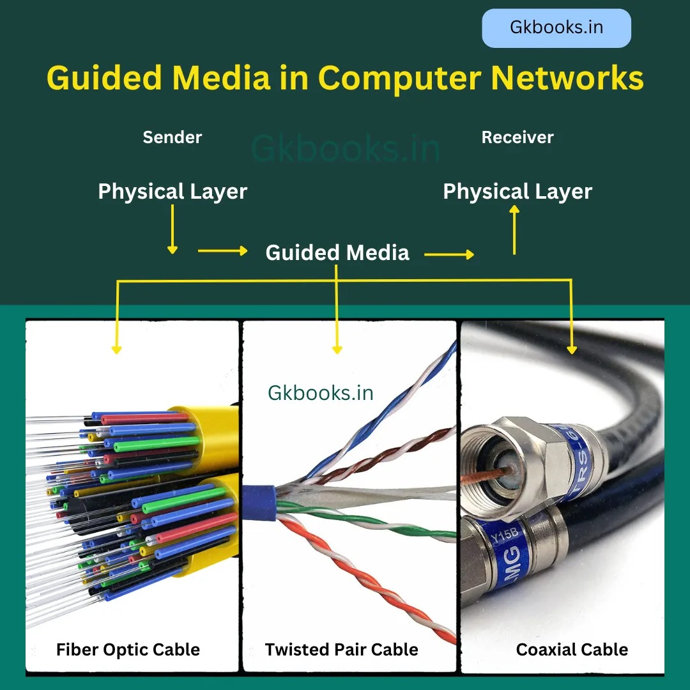

ID: 1221332
Skills: Front-end development
Hobbies: Drawing, Swimming
ID: 1221265
Skills: coding(C,Java,Python)
Hobbies: Gym,Car racing
ID: 1220982
Skills: hacking
Hobbies: Object Balancing
Transmission links are an essential component of computer networks. They determine the physical medium used to transfer data between devices. Depending on the type of network and requirements, there are many specifications should considered
The transmission links can be classified into two general types:-
Guided transmission links use physical media to transmit data, such as cables. These links are reliable and commonly used in local area networks (LANs). Below are some common types of guided links:

Unguided transmission links use wireless media for data transmission. These are useful in wide area networks (WANs) and mobile networks. Examples include: